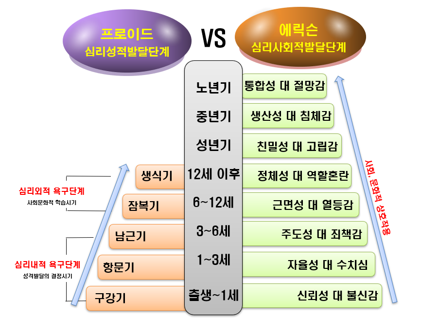
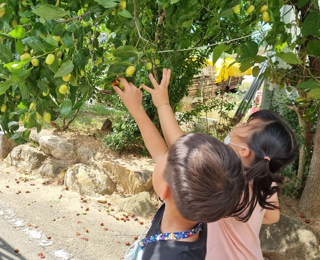

프로이드와 에릭슨의 이론은 갈등 구조가 인간의 발달에 많은 영향을 미친다는 것을 강조하였다. 발달과정을 단계적으로 접근하면서 질적 차이와 독특한 특성으로 진행된다는 점에 인간의 성장과정을 설명하였지만 과학적인 근거를 제시할 수 있는 정확성이 결여되어 있다. 프로이드와 에릭슨의 차이점을 알아보고자 한다.

1. 프로이드와 에릭슨의 발달이론 중심 개념의 차이는 다음과 같다.
첫째, 프로이드(Freud) 이론에 있어서 중심개념은 의식과 무의식의 관계에서 무의식의 차원을 강조하고 있다. 이 무의식은 성적 본능의 지배 하에 발현하는 것으로 보았으며, 이를 토대로 그는 단계적인 심리 성적이론을 발전시켰다. 심리 성적(psychosexual)이론은 인간의 발달을 원초아(id)의 발달을 중심으로 성적 욕구의 충족 방식과 관련하여 어린시절의 사고, 기억의 분석을 통해서 성격이 이루어진다면서 부모의 영향이 매우 중요하다고 강조하였다. 또한 프로이드는 성 에너지(libido)에 의한 성적 쾌감의 원천이 구강에서 항문, 성기로 옮겨간다고 체계적으로 설명하였다.
둘째, 에릭슨(Erikson)의 심리사회적(psychosocial) 발달이론은 프로이드의 원초아(id)보다 자아(ego)의 발달과정을 중심으로 생활주변의 사회, 문화적 관계에서 발생하는 갈등을 자아가 극복해 나가는 방식으로 분석하였다. 에릭슨은 성장발달은 개인에 대한 부모 뿐만 아니라 가족, 친구 간의 상호작용 관계 속에서 이루어진다고 보았다. 개인적인 생물학적 욕구보다 개인을 둘러싼 사회적 관계가 성격 형성에 더 중요하다고 보았으며, 발달 단계에서 획득한 능력이나 관심이 얼마나 개인에게 영향 주고 받는다고 하였다. 에릭슨의 관점에서는 개인과 사회와의 상호작용을 강조했기 때문에 변화와 성장은 출생에서부터 노년기에 이르는 전 생애에 걸쳐 전생애 계속된다고 보았다.
2. 프로이드와 에릭슨의 발달단계의 차이는 다음과 같다.
1) 프로이드의 심리성적발달 5단계
프로이드 발달단계는 5단계로 각 단계마다 성 에너지(libido)를 명확하게 구분하였고, 에릭슨은 인간의 발달을 8단계로 나누고 각 단계별로 극복해야 할 위기(developmental crisis)와 발달 과업을 제시하였다. 발달 과업의 성취여부를 양극(polarity)의 개념으로 8단계에 걸쳐 성인이 되고 성격 형성은 종결된다고 보았다.
1단계 : 구강기
구강기(oral stage, 출생~1세)는 리비도(libido)가 구강에 집중되어 있다. .
이 시기는 입(입술, 혀)의 감각과 활동에 집중이 되어 빨고, 삼키고, 뱉고, 깨무는 것과 같은 구강 공격(aggressive drive)을 한다. 주로 구강을 통해 만족과 쾌감을 얻는다. 아이는 구강 흡입에서 만족을 얻지 못하거나 과잉되면 다음단계의 항문기로 자연스럽게 넘어가지 못하여 고착(fixation)이 되어 구강을 이용하는 것에 집착하게 된다. 즉 구강기적 성격(oral personality)으로 과음 및 과식, 과도한 흡연, 언어적 빈정거림 및 험담, 수다스럽게 하기, 애정거부, 손가락 빨기 및 손톱뜯기 등 구강에 대한 스트레스로 나타난다.
2단계 : 항문기
항문기(anal stage, 2~3세)는 성 에너지(libido)가 항문 부위에 모아지며 대소변을 통해 쾌락을 느낀다.
이 시기에 배설물에 관심과 흥미를 갖고 적당한 때와 장소에서 해야한다는 참을성과 자율성(autonomy)의 기초가 된다. 아이는 부모에게 배변훈련을 받게 되는데 언제 배설해야 하는지를 조급해 하거나 불안을 느낀다. 배설에 대하여 억압적으로 처벌과 조롱을 받으면, 불안과 분노, 수치심을 느껴 항문기적 성격(analpersonality)으로 강박적 성격(obsessive personality)과 결벽증 투쟁적인 관계 등 고착현상이 나타난다.
3단계 : 남근기
남근기(phallic stage, 4~6세)는 성 에너지(libido)가 성기부위에 집중된다.
이 시기는 정신 에너지를 성기에 집중되기 때문에 심리적 변화가 크게 일어난다. 남아는 어머니에게 성적 욕구의 오이디프스 컴플렉스(oedipus complex) 갈등을 발휘하면서 아버지에게 적대감과 경쟁자로 불안과 두려움을 느끼면서 거세불안(castration anxiety)을 유발시킨다. 여아는 아버지가 갖고 있는 성기(penis)가 없다는 사실을 알고 남성을 부러워하는 음경선망(penis envy)을 하면서 일렉트라 콤플렉스(electra complex)를 하게 된다. 이 단계에서 동성의 부모를 동일시(identification) 함으로써 적절한 역할을 습득한게 된다. 남근기에 양심이나 초자아(superego)의 발전으로 성역할 정체감을 갖지만 고착되면 자신의 성을 지나치게 강조하고 갈망하는 행동을 나타낸다.
4단계 : 잠복기
잠복기(latent stage, 6~12세)는 초등학교 시기이다.
성 에너지(libido)가 성적인 충동이 잠재되어 가족보다 주변환경에 대한 탐색과 지적 호기심이 강하고 사회적인 교사나 또래 친구와 관계를 활발하게 이루어진다. 또래들과 친하게 지내면서 동성의 친구와 취미, 운동, 우정으로 에너지를 증가시켜야하는 과제이다. 그렇지 못하면 자기중심적인 사고와 열등감이 형성된다.
5단계 : 생식기
생식기(genital stage, 12세 이후)는 잠복기에 억압되었던 성 에너지(libido)가 의식의 세계로 나오는 시기이다.
이 시기는 급격한 신체적 변화(growth spurt)에 의한 남성호르몬(androgen)과 여성호르몬(estrogen) 분비로 2차성징이 나타난다. 이성에 대한 관심이 자연스럽게 증가되면서 부모로부터 독립하는 의존-독립의 갈등(dependence-independence conf1ict)이 강해진다. 성 충동과 정서적 불안정을 극복하기 위한 주지화(intellectualization)가 강해져 원초아를 억제하고 자아를 방어하려고 한다. 이 시기는 운동, 돌립, 봉사활동으로 자기정체성이 성숙되도록 해야한다. 그렇지 않을 경우, 불안이 증가하여 사춘기 특유의 공격성, 범죄 행동으로 나타난다.

2) 에릭슨의 심리사회적발달 8단계
에릭슨(Erikson)은 출생 후 발달이 완료된 성인까지 여덟 단계의 성격 발달 이론 제시한다. 마지막 단계 노년기는 발달단계는 완성 상태가 아닌 발달과정으로 진행된다는 점에서 풍부하고 포괄적이라 할 수 있다.
1단계 : 기본적 신뢰감 대 불신감(구강감각, 1세 이하 영아기)
기본적 신뢰(trust) 대 불신감(mistrust) 단계의 덕목은 희망(Hope)이다.
출생 후 아이는 어머니 또는 주 양육자와의 사회적 관계를 일관성 있게 아이의 욕구와 필요를 충족시켜주면 아이가 의존성과 예측성을 발견하게 되어 믿음을 갖게 된다. 이 시기에 신뢰감은 삶에 대한 긍정적 관점, 개방적 자세를 형성하지만 양육자의 행동이 일관성이 없고 거부적이면 아이는 세상에 대해 불신, 불안 및 공포가 내재화된다.
2단계 : 자율성 대 수치심(근육-항문, 1~3세 영아기)
자율성(autonomy) 대 수치심(shame/doubt) 단계의 덕목은 의지(Will)이다.
이 시기의 아이는 여러 개의 상반되는 충동 사이에서 스스로 선택하는 자율적 행동을 하려고 한다. 아이는 스스로 걷게 되면서 주위를 탐색하고, 음식도 자신의 힘으로 먹으려는 능력과 사용할 수 있는 기능에 대해 자긍심을 갖는다. 특히 배변훈련 과정에서 과잉통제에 의한 아이의 통제능력이 위축되거나 상실하게 되면 수치심, 회의감을 발달시키게 된다.
3단계 : 주도성 대 죄책감(운동성-생식기, 3~6세 유아기)
주도성 대 죄의식(initiative) 대 죄책감(guilt) 단계의 덕목은 목적(Purpose)이다.
이 시기의 아이는 자신의 활동을 스스로 달성하고자 주도성이 강해진다. 자신의 공격적 행위나 호기심을 적절하게 제한하지 못하거나 부모가 아이에게 과잉보호를 한다면 아이는 자신의 능력을 의심하고 나약해지고 죄의식을 증가시켜 수치심을 갖게 되면 심한 자기 회의에 빠지게 된다.
4단계 : 근면성 대 열등감(잠재, 6~12세 아동)
근면성(industry) 대 열등감(inferiority) 단계의 덕목은 유능(Competence)이다.
이 시기는 자아 성장의 결정적인 시기이며, 가족의 범주를 벗어나 더 넓은 사회에서 통용되는 할 수 있다는 능력을 배우려는 지적 호기심과 성취동기에 의해 자신감(self-confidence) 발달이 유발된다. 학업에 대한 원칙을 익히고 기술을 습득하는 과정에서 근면성과 성실성을 얻게 된다. 그렇지만 아이가 근면성이 발달하지 미흡하거나 노력한 것에 대해 주변에서 무시나 거절을 당하면 자신을 부적절하게 생각하고 열등감을 형성시킨다.
5단계 : 정체성 대 역할혼란 (12~19세 청소년기)
정체성(identity) 대 역할혼란(role confusion) 단계의 덕목은 충실(Fidelity)이다.
이 시기의 청소년은 급격한 신체 변화와 함께 나는 누구인가? 라는 자기 자신의 의문점에 대한 해답을 찾으려고 고민하고 방황하는 사춘기를 겪게 된다. 청소년은 타인의 견해와 자신에 대한 견해를 통합하여 일관된 자아상을 정립할 수 있는 자신의 정체성(ego-identity)을 찾는데 관점을 두는 시기이다. 역할 혼돈(role confusion) 또는 자아 정체성 혼미(identity diffusion)에 있는 청소년은 스스로가 누구이며, 어디에 속해있고, 어디로 향하는지 모른다. 그로인해 성장 후 정상적인 삶의 과정인 교육, 직업, 결혼 등에서 가치관에 심한 갈등을 일으킨다.
6단계 : 친밀성 대 고립감(20~44세 성년기)
친밀성(intimacy) 대 고립감(isolation) 단계의 덕목은 사랑(Love)이다.
이 시기에는 타인과의 관계에서 친밀성을 나타내는 일이 중요 과업이다. 이 시기에 대인 관계에서 요구되는 희생과 타협(compromise)을 기꺼이 감내해야 한다. 긍정적인 정체감을 확립한 사람은 진정한 관계를 이루지만 정체감을 확립하지 못한 사람은 타인과의 관계에서 거리두기(distantiation)가 친밀감과 함께 발생하게 된다. 성년기에 사회적 교류를 조화롭게 이루지 못하면 자기 자신에게만 몰두하거나 고립감을 느끼게 된다.
7단계 : 생산성 대 침체감(45~64세 중년기)
생산성(generativity) 대 침체감(stagnation) 단계의 덕목은 돌봄(Care)이다.
이 단계는 정립된 자아를 통해 의미 있는 일을 실천하는 시기이다. 짐승과 달리 인간의 사랑은 다음 세대에 영향을 끼치고 이끌어 가고자 하는 생식성(generativity) 욕구를 통하여 자녀를 양육하며 자신이 속한 조직에서 다음 세대에 영향을 미치고자 한다. 자녀가 없는 경우는 사회적 봉사와 사회적 업적을 통해서도 생산성을 추구하기도 한다. 그렇지만 중년기에 자신의 욕구를 만족시키지 못하는 경우, 자기중심적(self-centered)이 형성되어 침체감, 권태 등의 상태에 빠지게 된다.
8단계 : 통합성 대 절망감(65세 이후 노년기)
통합성(ego integrity) 대 절망감(despair) 단계의 덕목은 지혜(Wisdom)이다.
이 시기는 자신의 삶 전체를 받아들이는 것으로 자신의 삶을 되돌아보며 마지막 평가를 하는 시간이다. 자신의 삶을 되돌아 보면서 양극적 긴장(bipolar tensions)을 재현하거나 만족감과 충족감을 느끼기도 한다. 자신의 유한성을 인정하고 자아 통합(ego integrity)을 발달시킬 수 있다. 자아의 통합성 결여나 상실을 확인하고 또 다른 인생을 시작하려고 해도 이미 시간이 없어졌다는 절망(despair)을 느끼는 우울과 무기력을 나타낸다. 또한 신체적, 정신적, 경제적, 사회적인 한계와 제한 때문에 삶은 불공평하고 죽음이 두렵다고 느낄 수 있다.
출처
곽노의, 김경철, 김유미, 박대근(2013). 영유아발달. 양서원.
김동례, 권순황, 선애순(2018). 아동문학. 공동체.
김영애, 선애순, 정효정(2018). 영유아발달. 양서원
박순길, 김동례, 선애순 공저(2021), 영유아생활지도 및 상담. 공동체.
박순길,권순황,김현진,선애순,한재금(2017). 아동상담, 양서원.
정옥분(2013). 영아발달. 학지사.
2022.01.22 - [분류 전체보기] - 프로이드의 심리 성적 이론 - 정신 구조, 성격의 구성 요소
프로이드의 심리 성적 이론 - 정신 구조, 성격의 구성 요소
프로이드에 대한 이해와 사상 프로이드(Sigmund Freud, 1856~1939)는 체코슬로바키아 출신으로 의과대학에 진학하여 신경계통을 전공하였다. 그는 인간의 신체적 이상은 정신적 갈등에서 비롯된다고
think-sis.co.kr
2022.01.01 - [분류 전체보기] - 에릭슨의 심리사회적 발달 8단계-정신분석이론
에릭슨의 심리사회적 발달 8단계-정신분석이론
프로이드(Freud)의 영향을 받은 에릭슨(Erikson)은 심리사회적 이론(psychosocial theory)으로 확대시켜 인간의 의식적 자아와 성장에 접근을 시도하였다. 인간을 창의적이며 합리적 존재로 보았다. 더불
think-sis.co.kr